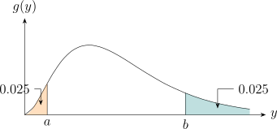
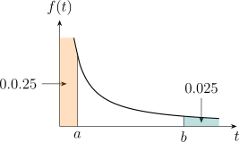

2.5 Large Sample properties of \(ML\) estimators
Large sample theory or the asymptotic behavior of estimators as the sample size \(n \rightarrow \infty \) is a form of optimality for evaluating estimators.
Definition 2.5.1. Consider a sequence of estimators \(T_n\) where the subscript \(n\) indicates that the estimator has been obtained from the data \((X_1, \, \cdots \, , \, X_n)\) with sample size \(n\). Then the sequence is said to be a consistent sequence of estimators of \(\tau (\theta )\) if \(T_n \underset {P}{\longrightarrow } \tau (\theta )\) for all \(\theta \in \Omega \).
Theorem 2.5.2. Suppose \(X_1, \, \cdots \, , \, X_n\) is a random sample from a regular statistical model \(\{f_{\theta }(x):\, \theta \in \Omega \}\). Let
\[S_1(\theta , X) = \frac {\partial }{\partial \theta }\log f_{\theta }(X)\]
be the score function for a sample of size one. Then with probability tending to 1 as \(n\longrightarrow \infty \), the
likelihood equation
\[\sum ^n_{i = 1} S_1(\theta , X_i) = 0\]
has a root \(\widehat {\theta _n}\) such that \(\widehat {\theta _n}\) converges in probability to \(\theta _0\) , the true value of the parameter as \(n \longrightarrow \infty \).
i.e The \(ML\) estimator is consistent \(\left (\widehat {\theta _n}\, \underset {P}{\longrightarrow } \theta _0\right )\).
Proof. Fix \(\varepsilon >0\) small enough that \([\theta _0-\varepsilon ,\theta _0+\varepsilon ]\subset \Omega \), and write \[\ell _n(\theta ) = \frac {1}{n}\sum _{i=1}^{n}\log f_{\theta }(X_i).\] For each fixed \(\theta \) the summands are independent and identically distributed, so by the weak law of large numbers \[\ell _n(\theta ) - \ell _n(\theta _0) \underset {P}{\longrightarrow } E_{\theta _0}\left [\log \frac {f_{\theta }(X)}{f_{\theta _0}(X)}\right ] = -K(\theta _0,\theta ),\] where \(K(\theta _0,\theta )\) is the Kullback–Leibler divergence. By Jensen’s inequality applied to the strictly concave logarithm, \[E_{\theta _0}\left [\log \frac {f_{\theta }(X)}{f_{\theta _0}(X)}\right ] \;\leq \; \log E_{\theta _0}\left [\frac {f_{\theta }(X)}{f_{\theta _0}(X)}\right ] = \log \int f_{\theta }(x)\,dx = 0,\] with equality only when \(f_{\theta } = f_{\theta _0}\) almost everywhere. Since the model is identifiable, \(K(\theta _0,\theta ) > 0\) for every \(\theta \neq \theta _0\).
Apply this at the two endpoints \(\theta _0 \pm \varepsilon \). With probability tending to one, \[\ell _n(\theta _0) > \ell _n(\theta _0-\varepsilon ) \qquad \text {and}\qquad \ell _n(\theta _0) > \ell _n(\theta _0+\varepsilon ),\] so \(\ell _n\) attains a local maximum at some interior point \(\widehat {\theta _n}\in (\theta _0-\varepsilon ,\theta _0+\varepsilon )\). At an interior maximum of a differentiable function the derivative vanishes, so \(\widehat {\theta _n}\) solves the likelihood equation \(\sum _{i=1}^{n}S_1(\theta ,X_i)=0\). As \(\varepsilon >0\) was arbitrary, \[P\left (\left |\widehat {\theta _n}-\theta _0\right |<\varepsilon \right )\longrightarrow 1 \qquad \text {for every } \varepsilon >0,\] which is exactly \(\widehat {\theta _n}\underset {P}{\longrightarrow }\theta _0\). □
Remark. The theorem asserts that some root of the likelihood equation is consistent, not that every root is, and not that the global maximiser is. When the likelihood equation has a unique root the distinction disappears, which is the case in most models met here; when it does not, the consistent root is the one to identify.
Theorem 2.5.3. Let \(X_1, \, \cdots \, , \, X_n\) be a random sample from a regular statistical model \(\{f_{\theta }(x):\, \theta \in \Omega \}\). Suppose \(\widehat {\theta _n}\) is a
consistent root of the likehood equation as in Theorem 2.5.2.
Let
\[J_1(\theta ) = E\left [-\frac {\partial ^2}{\partial \theta ^2}\log f_{\theta }(x)\right ]\]
be the Fisher information for a sample of size one. Then
\[\sqrt {n}\left (\widehat {\theta _n} - \theta _0\right )\, \underset {D}{\longrightarrow }\, Y \thicksim N\left (0, \frac {1}{J_1(\theta _0)}\right )\]
where \(\theta _0\) is the true value of the parameter.
This result may also be written as
\[\sqrt {n\, J_1(\theta _0)}\, \left (\widehat {\theta _n} - \theta _0\right ) = \sqrt {J(\theta _0)}\, \left (\widehat {\theta _n} - \theta _0\right ) \, \underset {D}{\longrightarrow }\, N(0,1).\]
By the Limiting Theorem it also follows that
\[\sqrt {n}\, \left (\tau \left (\widehat {\theta _n}\right ) - \tau (\theta _0)\right ) \, \longrightarrow \, W\thicksim N\left (0, \frac {(\tau '(\theta _0))^2}{J_1(\theta _0)}\right ).\]
Note. The theorem asserts:
- 1.
- the \(ML\) estimator is asymptotically unbiased.
- 2.
- the asymptotic variance of the \(ML\) estimator approaches the \(CRLB\).
Definition 2.5.4. A random variable \(Q(X,\theta )\) whose distribution does not depend on \(\theta \) or any unknown parameters is called a Pivotal quantity.
An asymptotic pivotal quantity is a function of the data and the parameter \(\theta \) whose distribution
converges to a distribution independent of \(\theta \) as \(n \longrightarrow \infty \). e.g If \(X_1, \, \cdots \, , \, X_n\) is a random sample from a \(N(\theta , \sigma ^2)\) distribution
where \(\sigma ^2\) is known, then
\[T = \frac {\sqrt {n}\, \left (\overline {X} - \theta \right )}{\sigma }\]
is a pivotal quantity.
If \(X_1, \, \cdots \, , \, X_n\) is a random sample of from a distribution with mean \(\theta \) and known variance \(\sigma ^2\) then the asymptotic
distribution of \(T\) is \(N(0,1)\) by the CLT and \(T\) is an asymptotic pivotal quantity pivotals can be used to
construct confidence intervals as follows write
\[P(C_1 < Q(X,\theta ) < C_2) = 1 - \alpha \]
provided \(Q\) is monotone, rewrite the statement.
\[P\left (C_1(X) < \theta < C_2(X)\right ) = 1- \alpha \]
i.e \([C_1(X) , C_2(X)]\) is a random C.I with confidence coefficient \(1 - \alpha \).
In cases, where an exact pivotal cannot be found, we can use the asymptotic distribution of \(\widehat {\theta _n}\). An approximate C.I. can be constructed based on the asymptotic pivotals \[\sqrt {J(\widehat {\theta _n})}\, \left (\widehat {\theta _n} - \theta _0\right ) \, \underset {D}{\longrightarrow } Z\thicksim N(0,1)\] or \[\sqrt {I(\widehat {\theta _n})}\, \left (\widehat {\theta _n} - \theta _0\right )\, \underset {D}{\longrightarrow } Z\thicksim (0,1).\]
Example 2.5.5. Let \(X_1, \, \cdots \, , \, X_n\) be a random sample from the distribution with pdf \[f_{\theta }(x) = \theta \, x^{\theta - 1}\,\, , \hspace {0.5cm} 0< x < 1.\]
- (a)
- Find the \(ML\) estimator of \(\theta \).
- (b)
- Find an approximate \(95\%\) CI for \(\theta \) based on the asymptotic distribution of \(\widehat {\theta _n}\).
- (c)
- Find the exact \(95\%\) C.I for \(\theta \).
Solution.
- (a)
- \(f_{\theta }(x) = \theta \, x^{\theta - 1}\)
\[L(\theta ) = \prod ^n_{i= 1} \theta \, x_i^{\theta - 1} = \theta ^n\, \left (\prod ^n_{i = 1} x_i\right )^{\theta - 1}.\]
\[\mathcal {L}(\theta ) = n\, \log \theta + (\theta - 1)\, \log \prod ^n_{i = 1} x_i.\]
\[S(\theta ) = \frac {n}{\theta } + \log \prod ^n_{i = 1} x_i.\] \(S(\theta ) = 0\) \[\frac {n}{\theta } + \sum ^n_{i = 1} \log x_i = 0\]
\[\widehat {\theta _n} = \frac {n}{-\sum ^n_{i = 1} \log x_i}\] \(\widehat {\theta } = \frac {n}{T}\) where \(T = -\sum ^n_{i = 1} \log X_i\) is the \(ML\) estimator of \(\theta \).
- (b)
- \(I(\theta ) = -\left (-\dfrac {n}{\theta ^2}\right ) = \dfrac {n}{\theta ^2}\)
\[J(\theta ) = E\left [I(\theta ,X)\right ] = \dfrac {n}{\theta ^2}.\]
\[\sqrt {J\left (\widehat {\theta _n}\right )}\, \left (\widehat {\theta _n} - \theta \right ) \, \underset {D}{\longrightarrow }\, Z\thicksim N(0,1)\]
\[\frac {\widehat {\theta _n} - \theta }{\dfrac {1}{\sqrt {J\left (\widehat {\theta _n}\right )}}}\, \underset {D}{\longrightarrow }\, Z \thicksim N(0,1).\]
An approximate 95\(\%\) C.I for \(\theta \) is given by \[\widehat {\theta _n} \pm 1.96\, \frac {1}{\sqrt {J(\widehat {\theta _n})}}\] \[\frac {n}{T} \pm 1.96\, \sqrt {\frac {1}{\dfrac {n}{\widehat {\theta _n}^2}}}\] \[\frac {n}{T}\pm 1.96 \frac {\widehat {\theta _n}}{\sqrt {n}}\] \[\frac {n}{T} \pm 1.96 \, \frac {\left (\frac {n}{T}\right )}{\sqrt {n}}\] \[\frac {n}{T} \pm 1.96\, \frac {\sqrt {n}}{T}\]
- (c)
- \(-\log X_i \thicksim ExP\left (\frac {1}{\theta }\right )\)
\[T = - \sum ^n_{i = 1} \log X_i \thicksim GAM \left (n, \frac {1}{\theta }\right )\]
then \(Y = 2\theta T\thicksim \chi ^2_{2n}\).
Now
Thus an exact \(95\%\) equal tailed C.I is given as follows: \[P(a < Y < b) = 0.95\] \[P\left (a < 2\theta T < b\right ) = 0.95\] \[P\left (\frac {1}{2T} < \theta < \frac {b}{2T}\right ) = 0.95\] Therefore \(\left [\frac {a}{2T}\, , \, \frac {b}{2T}\right ]\) is an exact \(95\%\) C.I for \(\theta \) where \[a = \chi ^2_{0.025,2n}\] \[b = \chi ^2_{0.975, 2n}\] i.e \[P\left (\chi ^2_{2n} \leq a\right ) = 0.025\] \[P\left (\chi ^2_{2n} \leq b \right ) = 0.975.\]
Example 2.5.6. Suppose \(X_1, \, \cdots \, , \, X_n\) is a random sample from the \(POI(\theta )\) distribution. Find approximate \(95\%\) C.I’s for \(\theta \) and \(\tau (\theta ) = e^{-\theta }\) based on the asymptotic distribution of \(\widehat {\theta _n}\).
Solution. From example 2.1.2 \[\widehat {\theta }_n = \overline {X}_n\] \[J(\theta ) = \frac {n}{\theta }\] an approximate \(95\%\) C.I for \(\theta \) is given by \[\widehat {\theta }_n \, \pm \, 1.96\, \sqrt {\dfrac {1}{J(\widehat {\theta }_n)}}\] \[\overline {X}_n \, \pm \, 1.96\, \sqrt {\dfrac {\widehat {\theta }_n}{n}}\] \[\overline {X}_n \, \pm \, 1.96\, \sqrt {\dfrac {\overline {x}_n}{n}}\] By Theorem 2.5.3 \[\sqrt {n}\, \left (\tau (\widehat {\theta }_n) - \tau (\theta )\right ) \, \underset {D}{\longrightarrow }\, N\left (0, \frac {\left (\tau '(\theta )\right )^2}{J_1(\theta )}\right )\] i.e \[T\left (\widehat {\theta }_n\right ) - \tau (\theta ) \, \underset {D}{\longrightarrow }\, N\left (0\, , \, \frac {\left (\tau '(\theta )\right )^2}{J(\theta )}\right )\]
\[\tau (\theta ) = e^{-\theta }\, \implies \, \tau '(\theta ) = - e^{-\theta }\] an approximate \(95\%\) C.I for \(\tau (\theta ) = e^{-\theta }\) is given by \[\tau \left (\widehat {\theta }_n\right )\pm 1.96\, \sqrt {\dfrac {\left (\tau '(\widehat {\theta }_n)\right )^2}{J(\widehat {\theta }_n)}}\]
\[e^{-\overline {x}_n} \, \pm 1.96\, \sqrt {\dfrac {\left (e^{-\widehat {\theta }_n}\right )^2}{n/\widehat {\theta }_n}}\]
\[e^{-\overline {x}} \, \pm \, 1.96\, e^{-\overline {x}}\, \sqrt {\dfrac {\overline {x}_n}{n}}.\] □
Example 2.5.7. Let \(X_1, \, \cdots \, , \, X_n\) be a random sample from the \(EXP(1,\theta )\) distribution. Find the \(ML\) estimator of \(\theta \). Show that the \(ML\) estimator \(\widehat {\theta }_n\) is a consistent estimator of \(\theta \). Find the distribution of \(n\left (\widehat {\theta }_n - \theta \right )\) and a \(95\%\) C.I for \(\theta \).
Solution. \begin {align*} L(\theta ) & = \prod ^n_{i = 1} e^{-(x_i - \theta )}\hspace {0.3cm} , \hspace {0.6cm} x_1, \, \cdots \, , \, x_n > \theta \\ & = e^{-\sum ^n_{i = 1}(x_i - \theta )}\hspace {0.3cm} , \hspace {0.6cm} x_{(1)} > \theta \\ & = e^{n\theta - \sum ^n_{i = 1} x_i}\hspace {0.3cm} , \hspace {0.6cm} x_{(1)} > \theta \end {align*}
Therefore \(\, \widehat {\theta }_n = X_{(1)}\). \[\widehat {\theta }_n \underset {P}{\longrightarrow } \theta \hspace {0.6cm} \text {if}\hspace {0.6cm} \lim _{n \rightarrow \infty } P\left (\left |\widehat {\theta }_n - \theta \right | > \varepsilon \right ) = 0.\] \begin {align*} P\left (\left |\widehat {\theta }_n - \theta \right | > \varepsilon \right ) & = P\left (\widehat {\theta }_n -\theta > \varepsilon \right ) + P\left (\widehat {\theta }_n - \theta < -\varepsilon \right )\\ & = P(X_{(1)} - \theta > \varepsilon ) + P(X_{(1)} - < -\varepsilon )\\ & = P(X_{(1)} > \varepsilon + \theta ) + P(X_{(1)} < -\varepsilon + \theta ). \end {align*}
Now, let \(Y = X_{(1)}\) \[f_{X_{(1)}}(y) = n\left [1 - F_X(y)\right ]^{n - 1}\, f_X(y)\]
\[F(y) = \int ^y_{\theta } e^{-(x - \theta )}\, dx = -e^{-(x - \theta )}\Big |_{\theta }^y = 1 + e^{-(y - \theta )}.\]
\[f(y) = n \left (e^{-(y - \theta )}\right )^{n - 1}\, e^{-(y - \theta )} = n\, e^{-n(y - \theta )}\hspace {0.3cm} , \hspace {0.5cm} y > \theta .\]
\begin {align*} P\left (\left |X_{(1)} - \theta \right | > \varepsilon \right ) & = \int ^{\infty }_{\theta + \varepsilon } n\, e^{-n(y -\theta )}\, dy \, +\, \underbrace {\int _{-\infty }^{\theta - \varepsilon } n\, e^{-n(y - \theta )}\, dy}_0\\ & =\frac {n\, e^{-n(y - \theta )}}{-n}\Big |_{\theta + \varepsilon }^{\infty }\\ & = - \left (0 - e^{-n(\theta + \varepsilon - \theta )}\right )\\ & = e^{-n\varepsilon }\, \longrightarrow \, 0. \end {align*}
i.e \(\lim _{n\rightarrow \infty } P\left (\left |X_{(1)} - \theta \right | > \varepsilon \right ) = 0\). Therefore \(\, X_{(1)} \underset {P}{\longrightarrow } \theta \) (it is consistent).
Let \(\, T = n\left (\widehat {\theta }_n - \theta \right )\) \begin {align*} F(t) & = P\left (T\leq t\right ) = P\left (n\left (\widehat {\theta }_n - \theta \right ) \leq t\right )\\ & = P\left (X_{(1)} - \theta \leq \frac {t}{n}\right )\\ & = P\left (X_{(1)} \leq \theta + \frac {t}{n}\right )\\ & = \int ^{\theta + \frac {t}{n}}_{\theta } n\, e^{-n(y - \theta )}\, dy\\ & = -e^{-n(y - \theta )}\Big |^{\theta + \frac {t}{n}}_{\theta }\\ & = 1 - e^{-t}. \end {align*}
We find the pdf by differentiating \[f(t) = e^{-t}\hspace {0.5cm} , \hspace {0.4cm} t> 0.\,\,\,\, \text {Therefore}\hspace {0.5cm} T\thicksim EXP(1).\]
A \(95\%\) C.I for \(\theta \) is calculated as follows: \[P(a < n(X_{(1)} - \theta ) < b) = 0.95\] \[P\left (\frac {a}{n} < X_{(1)} - \theta < \frac {b}{n}\right ) = 0.95\] \[P\left (-\frac {a}{n} > \theta - X_{(1)} > -\frac {b}{n}\right ) = 0.95\] \[P\left (-\frac {b}{n} < \theta - X_{(1)} < - \frac {a}{n}\right ) = 0.95\] \[P\left (X_{(1)} - \frac {b}{n} < \theta < X_{(1)} - \frac {a}{n}\right ) = 0.95\] \[\left [X_{(1)} - \frac {b}{n}\, , \, X_{(1)} - \frac {a}{n}\right ].\] where

\[F(a) = 1 - e^{-a} = 0.025 \, \implies e^{-a} = 0.975\] \[a = -\log 0.975\]
\[F(b) = 1 - e^{-b} = 0.975 \, \implies e^{-b} = 0.025\] \[b = -\log 0.025.\]
\[\left [X_{(1)} + \frac {\log 0.025}{n} \, , \, X_{(1)} + \frac {\log 0.975}{n}\right ].\] □
Problem 2.5.1. Suppose \(X_1, \, \cdots \, , \, X_n\) is a random sample from the \(UNIF(0,\theta )\) distribution. Show that the \(ML\) estimator \(\widehat {\theta }_n\) is a consistent estimator of \(\theta \) and find the asymptotic distribution of \(n\left (\widehat {\theta }_n - \theta \right )\).
Show solution
Solution. The maximum likelihood estimator is \(\widehat {\theta }_n = X_{(n)}\), since the likelihood \(\theta ^{-n}I\left (x_{(n)}<\theta \right )\) is decreasing in \(\theta \) and so is largest at the smallest admissible value.
Consistency
For \(0<\varepsilon <\theta \), and since \(X_{(n)}\leq \theta \) always, \[P\left (\left |X_{(n)}-\theta \right |>\varepsilon \right ) = P\left (X_{(n)}<\theta -\varepsilon \right ) = \left (\frac {\theta -\varepsilon }{\theta }\right )^{n}\longrightarrow 0 ,\] because the base is strictly between \(0\) and \(1\). Hence \(\widehat {\theta }_n\underset {P}{\longrightarrow }\theta \).
Asymptotic distribution
For \(w>0\), \[P\left (n\left (\theta -X_{(n)}\right ) > w\right ) = P\left (X_{(n)} < \theta - \frac {w}{n}\right ) = \left (1-\frac {w}{n\theta }\right )^{n} \longrightarrow e^{-w/\theta } .\] So \(n\left (\theta -\widehat {\theta }_n\right )\) converges in distribution to an exponential variable with mean \(\theta \), and equivalently \[n\left (\widehat {\theta }_n - \theta \right ) \underset {D}{\longrightarrow } -W, \qquad W\sim \text {EXP}(\theta ).\]
Remark. Two departures from the standard theory are worth naming. The rate is \(n\), not \(\sqrt {n}\), so the estimator converges much faster than usual; and the limit is exponential rather than normal, and is supported entirely on one side of zero. Neither contradicts the large-sample theory of this chapter, because that theory assumes the support of the density does not depend on the parameter — and here it does. This is the standard example of a non-regular model.
Problem 2.5.2. The lifetimes of a certain type of electronic equipment follows the \(EXP(\theta )\) distribution. Ten components where tested independently with the observed lifetimes, to the nearest days, given by
| 70 | 11 | 66 | 5 | 20 | 4 | 35 | 40 | 29 | 8 |
Find
- (a)
- \(ML\) estimator of \(\theta \) and verify its a maximum.
- (b)
- Fisher information and evaluate an approximate \(95\%\) C.I for \(\theta \).
- (c)
- The exact \(95\%\) C.I for \(\theta \).
Show solution
Solution. The ten observations sum to \(\sum x_i = 288\), so \(\overline {x}=28.8\).
(a)
For the EXP\((\theta )\) density \(f_{\theta }(x)=\theta ^{-1}e^{-x/\theta }\), \[\log L = -n\log \theta - \frac {1}{\theta }\sum _i x_i,\qquad S(\theta ) = -\frac {n}{\theta } + \frac {\sum _i x_i}{\theta ^{2}} .\] Setting \(S=0\) gives \(\widehat {\theta }=\overline {x}=28.8\) days. It is a maximum because \[\left .\frac {\partial ^{2}\log L}{\partial \theta ^{2}}\right |_{\theta =\overline {x}} = \frac {n}{\overline {x}^{2}} - \frac {2\sum _i x_i}{\overline {x}^{3}} = \frac {n}{\overline {x}^{2}} - \frac {2n}{\overline {x}^{2}} = -\frac {n}{\overline {x}^{2}} < 0 .\]
(b)
\(-E\left [\partial ^{2}\log L/\partial \theta ^{2}\right ] = n/\theta ^{2}\), so \(I_n(\theta )=n/\theta ^{2}\) and the asymptotic standard error is \(\widehat {\theta }/\sqrt {n} = 28.8/\sqrt {10} = 9.107\). An approximate \(95\%\) interval is \[28.8 \pm 1.96(9.107) = (10.95,\ 46.65).\]
(c)
Exactly, \(2\sum _i X_i/\theta \sim \chi ^{2}_{(2n)} = \chi ^{2}_{(20)}\). From the tables \(\chi ^{2}_{20,\,0.975}=34.170\) and \(\chi ^{2}_{20,\,0.025}=9.591\), so \[\left (\frac {2(288)}{34.170},\ \frac {2(288)}{9.591}\right ) = (16.86,\ 60.06).\]
Remark. The exact interval is both wider and markedly asymmetric about \(28.8\), while the approximate one is symmetric by construction. With \(n=10\) the normal approximation is simply not good enough — and note the approximate interval’s lower endpoint, \(10.95\), sits well below the exact one at \(16.86\). Use the exact interval whenever the pivotal quantity is available, as it is here.
Theorem 2.5.8 (The Multiparameter Case). If \(\theta = (\theta _1, \, \cdots \, , \, \theta _k)^t\), the likelihood equation consists of \(k\)
equations in the \(K\) unknown parameters. Under similar regularity conditions, the components
of \(\widehat {\theta }_n\) each converge in probability to the corresponding component of \(\theta \).
Similarly
\[\sqrt {n}\, \left (\widehat {\theta }_n - \theta \right )\, \underset {D}{\longrightarrow }\, Y\, \thicksim \, MVN\left (0\, , \, \left (J_1(\theta )\right )^{-1}\right )\]
where \(J_1(\theta )\) is a Fisher information matrix for a sample of size one.
It follows that
\[\sqrt {n}\, \left (\tau \left (\widehat {\theta }_n\right ) - \tau (\theta )\right ) \, \underset {D}{\longrightarrow }\, w\thicksim MVN\left (0\, , \, D(\theta )^t\, (J_1(\theta ))^{-1}\, D(\theta )\right )\]
where
\[D(\theta ) = \left (\dfrac {\partial \tau }{\partial \theta _1}\, , \, \cdots \,, \, \frac {\partial \tau }{\partial \theta _k}\right )^t.\]
Approximate C.I’s for a single parameter, say \(\theta _i\), can be constructed based on the approximate
normality of the following:
\[\frac {\left (\widehat {\theta }_n\right )_i - (\theta )_i}{\sqrt {\left [J\left (\widehat {\theta }_n\right )\right ]^{-1}_{ii}}}\hspace {1cm} \text {or}\hspace {1cm}\frac {\left (\widehat {\theta }_n\right )_i - (\theta )_i}{\left [I\left (\widehat {\theta }_n\right )\right ]^{-1}_{ii}}\]
where \((\theta )_i\) is the \(i^{\text {th}}\) component of the vector \(\theta \) and \(\left [J(\theta )\right ]_{ii}\) is the \((i,i)^{\text {th}}\) of the matrix \(\left [J(\theta )\right ]^{-1}\).
Example 2.5.9. Suppose \(X_1, \, \cdots \, , \, X_n\) is a random sample from the \(GAM(\alpha \, , \, \beta )\) distribution and \(\theta = (\alpha \, , \, \beta )^t\). Find an approximate \(95\%\) C.I for \(\beta \) and \(\tau (\theta ) = E(X) = \alpha \beta \).
Solution. From example 2.2.8 \[J(\theta ) = \begin {pmatrix} n\, \Psi '(\alpha ) & \dfrac {n}{\beta }\\\\ \dfrac {n}{\beta } & \dfrac {n\alpha }{\beta ^2}\\ \end {pmatrix}\]
\[\left |J(\theta )\right | = \frac {n^2\, \alpha \, \Psi '(\alpha }{\beta ^2} - \frac {n^2}{\beta ^2} = \frac {n^2\, \left (\alpha \, \Psi '(\alpha ) - 1\right )}{\beta ^2}.\]
\[\left [J(\theta )\right ]^{-1} = \frac {\beta ^2}{n^2\, \left (\alpha \, \Psi '(\alpha ) - 1\right )}\begin {pmatrix} \dfrac {n\alpha }{\beta ^2} & -\dfrac {n}{\beta }\\\\ -\dfrac {n}{\beta } & n\, \Psi '(\alpha )\\ \end {pmatrix} = \frac {\beta ^2}{n\, \left (\alpha \, \Psi '(\alpha ) - 1\right )}\begin {pmatrix} \dfrac {\alpha }{\beta ^2} & -\dfrac {1}{\beta }\\\\ -\dfrac {1}{\beta } & \Psi '(\alpha )\\ \end {pmatrix}.\]
a \(95\%\) C.I for \(\beta \) is given by \[\widehat {\beta }_n \, \pm \, 1.96\, \sqrt {\var \left (\widehat {\beta }_n\right )}\]
\[\widehat {\beta }_n \, \pm \, 1.96\, \sqrt {\left [J\left (\widehat {\theta }_n\right )\right ]_{22}}\]
\[\widehat {\beta }_n\, \pm \, 1.96\, \sqrt {\dfrac {\widehat {\beta }_n^2\, \Psi '\left (\widehat {\alpha }_n\right )}{n\,\left (\widehat {\alpha }_n\, \Psi \left (\widehat {\alpha }_n\right )\right )^{-1}}}.\]
\[\tau \left (\widehat {\theta }_n\right ) - \tau (\theta ) \, \underset {D}{\longrightarrow }\, W\thicksim MVN\left (0\, , \, D(\theta )^t\, \left [J(\theta )\right ]^{-1}\, D(\theta )\right )\]
\[\tau (\theta ) = \alpha \beta \]
\[D(\theta ) = \begin {pmatrix} \dfrac {\partial \tau }{\partial \alpha }\\\\ \dfrac {\partial \tau }{\partial \beta }\\ \end {pmatrix} = \begin {pmatrix} \beta \\ \alpha \\ \end {pmatrix}.\] \begin {align*} D(\theta )^t\, \left [J(\theta )\right ]^{-1}\, D(\theta ) & = \begin {pmatrix} \beta & \alpha \\ \end {pmatrix} \frac {\beta ^2}{n\, \left (\alpha \, \Psi '(\alpha ) - 1\right )}\begin {pmatrix} \dfrac {\alpha }{\beta ^2} & -\dfrac {1}{\beta }\\\\ -\dfrac {1}{\beta } & \Psi '(\alpha )\\ \end {pmatrix}\, \begin {pmatrix} \beta \\ \alpha \\ \end {pmatrix}\\\\ & = \frac {\beta ^2}{n\, \left (\alpha \, \Psi '(\alpha ) - 1\right )} \begin {pmatrix} \dfrac {\alpha }{\beta } - \dfrac {\alpha }{\beta } && -1 + \alpha \, \Psi '(\alpha )\\ \end {pmatrix}\, \begin {pmatrix} \beta \\ \alpha \\ \end {pmatrix}.\\\\ & = \frac {\beta ^2}{n\, \left (\alpha \, \Psi '(\alpha ) - 1\right )}\, \begin {pmatrix} 0 + \alpha \left (\alpha \, \Psi '(\alpha ) - 1\right )\\ \end {pmatrix}\\\\ & = \frac {\alpha \, \beta ^2}{n} \end {align*}
a \(95\%\) C.I for \(\tau (\theta ) = \alpha \beta \) is given by \[\widehat {\alpha }_n\widehat {\beta }_n\, \pm \, 1.96\, \sqrt {\dfrac {\widehat {\alpha }_n\, \widehat {\beta }_n^2}{n}}.\] □
Problem 2.5.3. For problem 2.2.5 find an approximate \(95\%\) C.I for \[\ \tau (\theta ) = \cov (X_1, X_2) = -n\theta _1\theta _2.\]
Show solution
Solution. From the multinomial problem, \(\widehat {\theta }_j = X_j/n\) and \[J(\theta ) = n\begin {pmatrix} \dfrac {1}{\theta _1}+\dfrac {1}{\theta _3} & \dfrac {1}{\theta _3}\\[6pt] \dfrac {1}{\theta _3} & \dfrac {1}{\theta _2}+\dfrac {1}{\theta _3}\end {pmatrix}, \qquad J^{-1}(\theta ) = \frac {1}{n}\begin {pmatrix} \theta _1(1-\theta _1) & -\theta _1\theta _2\\ -\theta _1\theta _2 & \theta _2(1-\theta _2)\end {pmatrix}.\] With \(\tau (\theta ) = -n\theta _1\theta _2\), \[D(\theta ) = \left (\frac {\partial \tau }{\partial \theta _1},\ \frac {\partial \tau }{\partial \theta _2}\right )^{t} = -n\left (\theta _2,\ \theta _1\right )^{t},\] and the delta method gives \[\var \left (\widehat {\tau }\right ) \approx D^{t}J^{-1}D = n\,\theta _1\theta _2\left (\theta _1+\theta _2-4\theta _1\theta _2\right ).\] Substituting the estimates, an approximate \(95\%\) interval for \(\cov (X_1,X_2)\) is \[-n\widehat {\theta }_1\widehat {\theta }_2 \ \pm \ 1.96 \sqrt {n\,\widehat {\theta }_1\widehat {\theta }_2 \left (\widehat {\theta }_1+\widehat {\theta }_2-4\widehat {\theta }_1\widehat {\theta }_2\right )} .\] The interval should be truncated at zero on the right, since a multinomial covariance is always negative.
Show solution
Solution. From the earlier problem the information matrix for \(\theta =(\alpha ,\beta )^{t}\) is \[J(\theta ) = n\begin {pmatrix} \dfrac {1}{\alpha ^{2}} & \dfrac {1}{\beta (\alpha +1)}\\[6pt] \dfrac {1}{\beta (\alpha +1)} & \dfrac {\alpha }{\beta ^{2}(\alpha +2)}\end {pmatrix},\] whose determinant is \[\left |J\right | = n^{2}\left [\frac {1}{\alpha \beta ^{2}(\alpha +2)} - \frac {1}{\beta ^{2}(\alpha +1)^{2}}\right ] = \frac {n^{2}}{\alpha \beta ^{2}(\alpha +2)(\alpha +1)^{2}} \left [(\alpha +1)^{2}-\alpha (\alpha +2)\right ] = \frac {n^{2}}{\alpha \beta ^{2}(\alpha +2)(\alpha +1)^{2}} ,\] using \((\alpha +1)^{2}-\alpha (\alpha +2)=1\).
Interval for \(\beta \)
The relevant entry of \(J^{-1}\) is \[\left [J^{-1}\right ]_{22} = \frac {n/\alpha ^{2}}{\left |J\right |} = \frac {\beta ^{2}(\alpha +1)^{2}(\alpha +2)}{n\,\alpha },\] so an approximate \(95\%\) interval is \[\widehat {\beta } \pm 1.96\,\frac {\widehat {\beta }\left (\widehat {\alpha }+1\right )}{\sqrt {n}} \sqrt {\frac {\widehat {\alpha }+2}{\widehat {\alpha }}} .\]
Interval for \(E(X)\)
Integration gives \(\tau (\theta )=E(X)=\dfrac {1}{\beta (\alpha -1)}\) for \(\alpha >1\), so \[D(\theta ) = \left (-\frac {1}{\beta (\alpha -1)^{2}},\ -\frac {1}{\beta ^{2}(\alpha -1)}\right )^{t},\] and the interval is \(\widehat {\tau } \pm 1.96\sqrt {D^{t}J^{-1}D}\) with everything evaluated at the maximum likelihood estimates. Note the mean does not exist at all unless \(\alpha >1\), so the interval is meaningful only when \(\widehat {\alpha }\) is comfortably above one.
Problem 2.5.5. Suppose \(X_1, \, \cdots \, , \, X_n\) is a random sample from the \(BETA(\alpha \, ,\, \beta )\) distribution. Explain how you would find the \(ML\) estimate of \(\theta = (\alpha , \beta )^t\), approximate \(95\%\) C.I’s for \(\alpha \) and \[\tau (\theta ) = E(X) = \frac {\alpha }{\alpha + \beta }.\]
Show solution
Solution.
The estimate
\[\log L = n\log \Gamma (\alpha +\beta ) - n\log \Gamma (\alpha ) - n\log \Gamma (\beta ) + (\alpha -1)\sum _i\log x_i + (\beta -1)\sum _i\log (1-x_i).\] Differentiating and writing \(\psi =\Gamma '/\Gamma \) for the digamma function, the likelihood equations are \[\psi (\alpha +\beta )-\psi (\alpha ) = -\frac {1}{n}\sum _i\log x_i,\qquad \psi (\alpha +\beta )-\psi (\beta ) = -\frac {1}{n}\sum _i\log (1-x_i).\] Neither can be solved in closed form; the pair is solved numerically by Newton–Raphson, using method-of-moments values as starting points. This is the same situation as the previous problem, but with no parameter eliminable in closed form, so the search is two-dimensional.
The information matrix
Differentiating once more gives, with \(\psi '\) the trigamma function, \[J(\theta ) = n\begin {pmatrix} \psi '(\alpha )-\psi '(\alpha +\beta ) & -\psi '(\alpha +\beta )\\ -\psi '(\alpha +\beta ) & \psi '(\beta )-\psi '(\alpha +\beta )\end {pmatrix},\] which is free of the data, so the observed and expected information coincide.
Intervals
For \(\alpha \), use \(\widehat {\alpha }\pm 1.96\sqrt {\left [J^{-1}\right ]_{11}}\) evaluated at the estimates. For \(\tau (\theta )=\alpha /(\alpha +\beta )\), \[D(\theta ) = \left (\frac {\beta }{(\alpha +\beta )^{2}},\ \frac {-\alpha }{(\alpha +\beta )^{2}}\right )^{t},\] and the interval is \(\widehat {\tau }\pm 1.96\sqrt {D^{t}J^{-1}D}\). Since \(\tau \) is a probability the interval should be truncated to \([0,1]\); a logit transformation before applying the delta method usually behaves better near the endpoints.
Questions on this section
Stuck on something here? Ask below and it stays attached to this topic.